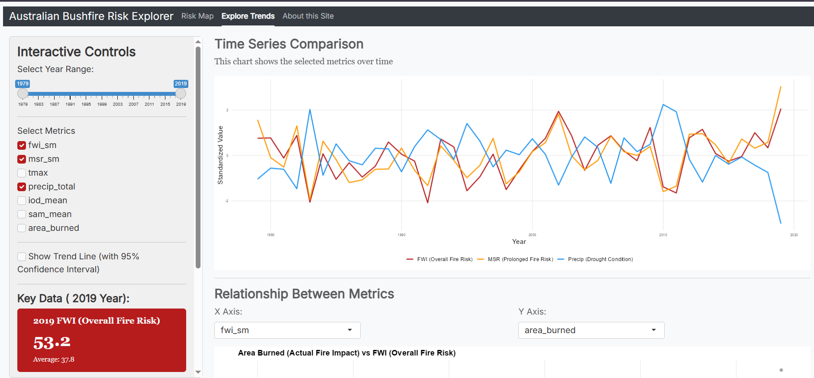
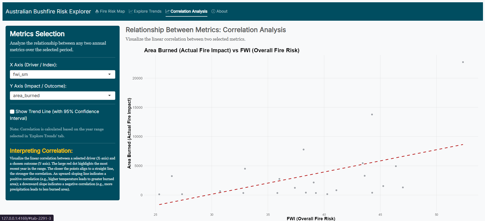

Introduction to the ausbushfire
Heng-Hsieh Chang
2025-10-28
Source:vignettes/intro_to_ausbushfire.Rmd
intro_to_ausbushfire.RmdOverview
The ausbushfire R package provides an interactive
interface to explore key fire weather indices and climate drivers in
Southeastern Australia from 1979 to 2019, analyzing
trends related to the Black Summer bushfires.
Key Features
- Browse fire weather index (FWI) and burned area on a map (with slider for year),
- Explore trends in metrics like FWI, MSR, Tmax, Precip, IOD, SAM, Area Burned (with filters),
- View relationships between metrics in scatter plots.
Installation
You can install the development version of ausbushfire
directly from GitHub using the remotes
package.
# Install remotes if needed
install.packages("remotes")
remotes::install_github("ETC5523-2025/assignment-4-packages-and-shiny-apps-Jessica19940828")Launch the Shiny Application
The interactive explorer lives under inst/app/. Launch it with the exported function:
library(ausbushfire)
ausbushfire::run_app()Package Data
The package ausbushfire ships one compact dataset:
- ausbushfire_data - Southeastern Australia annual data by fire season key metrics (FWI, MSR, Tmax, Precip, IOD, SAM, burned area) from 1979-2020.
See the full schema in the Data dictionary and see worked examples of data usage in the Functions in ausbushfire
You can load the package and inspect the data:
App Tour: Interpreting Outputs
- Fire Risk Map
Select Year with slider to show map opacity based on burned area, and update the fire risk (FWI) and actual impact (Burned Area) relative to the long-term historical context.
Example - Risk Map: opacity changes with year slider, popup shows FWI and burned area.
| Component | Description of Field | Interpretation of Output |
|---|---|---|
| Select Year Slider | Chooses the fire season year (ending year). Data is available from 1997 to 2018 for burned area. | Use to visualize historical extremes. Dragging the slider allowing visual comparison of the extent of the burn area. |
| FWI Value Box | Shows the Fire Weather Index (FWI) for the selected year and the long-term average (1979–2019). | If the box is RED, the FWI is significantly above the long-term average, indicating exceptionally dangerous fire weather conditions. If ORANGE, the risk is below or near average. |
| Burned Area Value Box | Shows the Total Burned Area () for the selected year. | The intensity of the red filling on the map directly reflects this area value. Higher opacity/intensity means a more devastating fire season. |
- Explore Trends
Filter Year Range and Metrics to see the correlation and volatility of climate metrics over time.
- Time Series Comparison: Long-Term Trends

Example - Time Series: standardized metrics over time with trend line.
| Component | Description of Field | Interpretation of Output |
|---|---|---|
| Select Metrics | Allows selecting multiple metrics (FWI, Tmax, IOD, etc.) to overlay on a single chart. | All metrics are standardized (Z-score). This lets you compare how metrics with different units (e.g., Tmax in vs. IOD index) fluctuate together. Look for co-movement (e.g., FWI increasing when Tmax increases) to infer attribution drivers. |
| Show Trend Line | Overlays a linear trend line (with 95% confidence interval). | A positive, statistically significant slope on the trend line (especially for FWI and Tmax) supports the claim that the frequency of extreme events has increased due to long-term climate change. |
- Relationship Between Metrics: Correlation Analysis

Example - Relationship Between Metrics: .
| Component | Description of Field | Interpretation of Output |
|---|---|---|
| X/Y Axis Selectors | Chooses which two metrics to plot against each other. | Verify scientific hypotheses. For example, plotting Tmax (X) vs. FWI (Y) should show a strong positive correlation, confirming that heat is a primary driver of fire risk in the region. |
| Highlighted Year | The most recent year in the selected range (e.g., 2019) is highlighted as a large red point. | Shows the position of the most extreme event (e.g., Black Summer) relative to the historical scatter. If the red point is far above the general trend, it suggests a particularly severe anomaly. |
Sources
van Oldenborgh et al. (2021) article: https://nhess.copernicus.org/articles/21/941/2021/
Package Structure
assignment-4-packages-and-shiny-apps-Jessica19940828/ ├── ausbushfire.Rproj ├── data │ └── ausbushfire_data.rda ├── data-raw │ ├── area_data.txt │ ├── fwi_data.txt │ ├── iod_data.txt │ ├── msr_data.txt │ ├── precip_data.txt │ ├── process_data.R │ ├── sam_data.txt │ └── tmax_data.txt ├── DESCRIPTION ├── inst │ └── app │ └── app.R ├── LICENSE ├── LICENSE.md ├── man │ ├── ausbushfire-package.Rd │ ├── ausbushfire_data.Rd │ └── run_app.Rd ├── NAMESPACE ├── R │ ├── ausbushfire-package.R │ ├── data.R │ └── run_app.R ├── README.md ├── README.Rmd └── vignettes ├── data_dictionary.Rmd └── intro_to_ausbushfire.Rmd